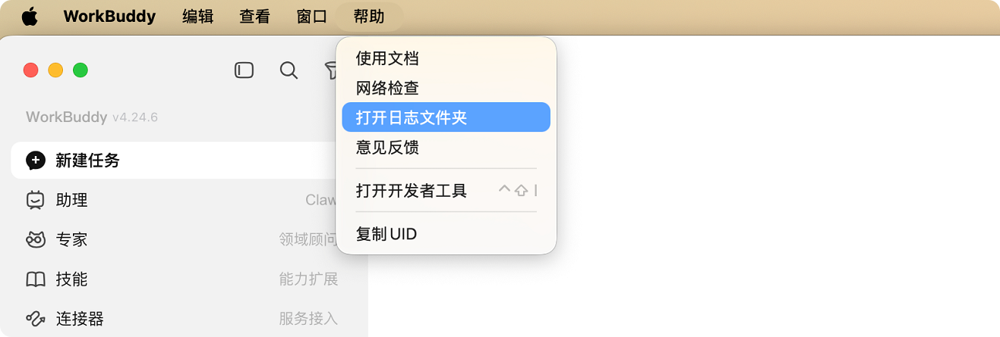
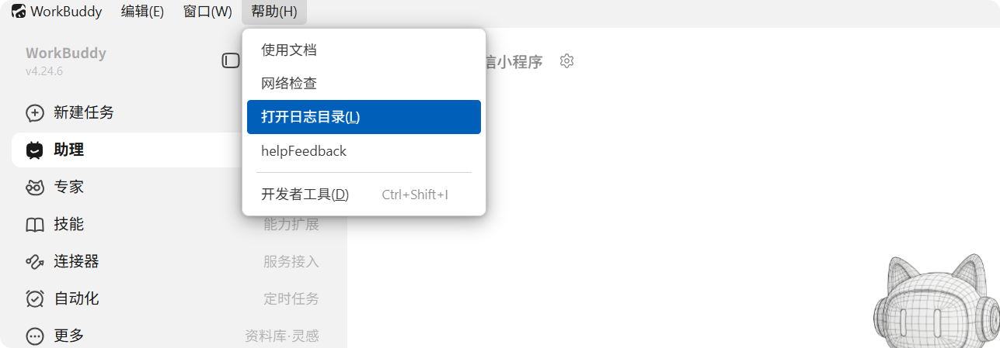

常见问题
本文汇总了当前使用 WorkBuddy 过程中最常见的问题与处理建议，适用于日常接入、安装登录、工作空间管理、模型配置与性能排查等场景。
使用 WorkBuddy 的过程中遇问题可以在本页查询解决方案。如果没有成功解决，建议向 workbuddy@tencent.com 发送邮件咨询。
安装与登录问题
1） WorkBuddy 升级或隔天重启后，原工作空间文件夹消失
- 适用系统：
Windows。 - 现象说明：升级重启后，原有工作空间在界面中消失；部分用户可在
C:\Users\<用户名>\workbuddy目录中找到历史文件夹，但存在文件缺失情况，也有用户整个目录都不见了。 - 建议处理：
- 打开文件管理器(Windows)或 Finder(Mac)，找到
WorkBuddy大文件夹。- Windows：
C:\Users\<用户名>\workbuddy - Mac:
/Users/用户名/WorkBuddy
- Windows：
- 通过 WorkBuddy 打开以日期或用户自定义名字命名的文件夹即可找回原有历史记录。
- 建议将重要文件同步保存到独立目录。
- 打开文件管理器(Windows)或 Finder(Mac)，找到
2）点击 WorkBuddy 无反应，无法登陆或登录失败
常见原因(1)：未设置默认浏览器。
建议处理
Windows:
- 进入系统设置，打开默认应用，将
Chrome设为默认浏览器后，选择在浏览器中打开尝试再次拉起登录验证窗口。 - 选择复制链接后自行打开浏览器，Ctrl + V 或右键粘贴链接到浏览器，完成登录验证。
Mac:
- 打开「系统偏好设置」→「通用」。
- 设置默认浏览器为 Chrome 或 Safari。
- 重启应用后重新登录。
- 进入系统设置，打开默认应用，将

常见原因(2)：用户没有WorkBuddy账号文件夹操作权限。
建议处理
确认目录权限
Mac系统在终端中执行：ls -la ~/Library/Application\ Support/CodeBuddyExtension/ ls -la ~/Library/Application\ Support/CodeBuddyExtension/Data/ ls -la ~/Library/Application\ Support/CodeBuddyExtension/Data/Public/ ls -la ~/Library/Application\ Support/CodeBuddyExtension/Data/Public/auth/如果目录 owner 不是当前用户（可通过
whoami命令确认），则需要授权。Windows系统在 PowerShell 中执行：Get-Acl "$env:APPDATA\CodeBuddyExtension" | Format-List Get-Acl "$env:APPDATA\CodeBuddyExtension\Data" | Format-List Get-Acl "$env:APPDATA\CodeBuddyExtension\Data\Public" | Format-List Get-Acl "$env:APPDATA\CodeBuddyExtension\Data\Public\auth" | Format-List确认 Owner 和 Access 列表中包含当前用户。可通过
whoami命令确认当前用户名。授权当前用户
Mac系统在终端中执行：sudo chown -R $(whoami) ~/Library/Application\ Support/CodeBuddyExtensionWindows系统以管理员身份打开 PowerShell，执行：$user = [System.Security.Principal.WindowsIdentity]::GetCurrent().Name $path = "$env:APPDATA\CodeBuddyExtension" takeown /F $path /R /D Y icacls $path /grant "${user}:(OI)(CI)F" /T重新登录
退出 WorkBuddy 并重新打开，重新登录账号。
常见原因(3)：安全软件拦截。
建议处理
临时退出以下安全软件后重试：
- 火绒
- 360 安全卫士
- 电脑管家
- Windows 安全中心
TIP
WorkBuddy 常被误拦截，关闭安全软件后重试即可。
3）Windows 11 ARM 64 架构无法安装
- 问题说明：当前版本暂不支持
ARM 64架构的Windows 11。 - 建议处理：建议改用受支持的设备环境，或等待后续版本支持。
日志与问题排查
1）日志在哪里查看
- 建议处理：
MAC： 打开 WorkBuddy，点击顶部帮助 -> 打开日志文件夹，找到对应的日志 （.zip） 包。

Windows： 打开 WorkBuddy，在左上角帮助的下拉框中找到打开日志目录，其中的压缩包就是日志文件。

2）在日志中发现产品问题或使用时出现产品功能异常在哪里反馈
- 建议处理：
- 打开WorkBuddy，在右上角帮助的下拉框中找到helpFeedback，快捷打开意见反馈入口；或在右下角头像处打开设置-帮助与反馈-意见反馈。
- 在意见反馈页面中，描述您遇到的问题，上传情况截图并勾选上传日志后提交反馈。
TIP
日志仅于排查问题，可能包含对话记录、设备信息等数据。详情请查阅隐私保护声明

Bot 连接问题
1）已完成接入，但发送消息后没有响应
- 适用平台：
QQ、企业微信、微信、飞书、钉钉。 - 常见表现： WorkBuddy 端显示已注册或已配置完成，但机器人不回复、偶发断开，或首次可用后再次打开即失联。
- 建议处理：
- 先确认当前连接状态是否仍然在线。
- 优先切换模型后再次测试，部分无响应问题可通过切换模型缓解。
- 微信场景若长时间无响应，建议断开后重新连接。
- 若首次可用、后续失效，请记录复现时间与平台类型，便于进一步排查。
2）鸿蒙微信扫码失败怎么办
- 现象说明：鸿蒙
6的微信扫码当前存在不兼容情况。 - 已知信息：鸿蒙
4可以正常连接。 - 临时方案：可先使用安卓手机完成首次扫码连接，再切换回鸿蒙微信继续使用。
3）企业微信提示 Webhook 域名主体校验未通过
- 问题说明：企业微信侧会对
Webhook地址进行域名主体校验。 - 建议处理：先核对
Webhook地址是否完整、是否与当前配置要求一致；若仍无法通过，请保留报错截图并提交排查。
4）QQ 机器人频繁断开或不回复
- 现象说明：机器人显示断开，或能接入但没有返回内容。
- 建议处理：优先切换模型测试；若问题持续存在，请记录错误码、发生时间与网络环境后再进行排查。
5）飞书配置 Webhook 时提示无法检查链接
- 现象说明：重复输入同一
Webhook地址后，可能出现无法检查链接的提示。 - 建议处理：建议重新创建或重新填写一次配置，避免重复输入同一地址；若仍失败，请保留提示信息后反馈。
6）如何连接微信小程序
- 建议处理：打开WorkBuddy，鼠标悬停左侧小程序图标，扫码打开WorkBuddy小程序完成授权。步骤指引参考WorkBuddy 小程序简介
文件读取与工作空间问题
1）无法读取图片、PDF、Excel、Word 等文件
- 常见原因：当前模型不支持对应文件类型，或未安装相关插件与
Skill。 - 建议处理：
- 切换到支持图片或文档输入的模型，例如支持图片理解的模型。
- 分步骤描述需求，让
AI逐步完成环境安装与文件处理。 - 在插件或技能市场安装文档处理类插件与
Skill。
2）整理桌面后出现文件丢失
- 适用系统：
Windows。 - 现象说明：向
WorkBuddy下发整理桌面指令后，会生成一个PS文件；执行后桌面完成整理，但部分文件疑似丢失。 - 建议处理：
- 执行前先备份桌面重要文件。
- 执行后优先检查目标整理目录与回收站。
- 若仍有异常，请保留生成脚本与执行结果截图后排查。
3）工作文件夹无法导入 WorkBuddy
- 现象说明：拖拽文件夹无效，无法导入现有工作目录。
- 建议处理：当前文档未提供明确修复方案，建议先记录系统版本、拖拽方式与报错现象，再提交排查。
4）WorkBuddy 生成的文件打不开
- 常见原因：未在需求中明确指定输出文件类型。
- 建议处理：下达任务时明确说明要生成的文件格式，例如
Word、Excel、PDF或Markdown。
5）更新时提示"检测到应用安装目录下存在用户项目目录"
- 常见原因：
WorkBuddy更新或重装时，安装目录会清空并重新写入文件。 - 建议处理：
- 打开安装目录：在 WorkBuddy 图标上 右键 -> 打开文件所在位置。
提示
常见安装目录路径：
- windows：
C:\Users\{用户名}\AppData\Local\Programs\WorkBuddy - macOS：
/Applications/WorkBuddy.app
安装目录下通常有bin， locales， resources， tools， _ 这些文件夹。
移除对话产生的文件夹，仅保留文件名为
bin，locales，resources和tools的系统文件夹。检查是否有个人文件，如果有也请一并移走防止被安装程序覆盖。重新打开客户端，点击上方 WorkBuddy - 检查更新，等待安装包下载完成。
6）助理工作空间的历史会话找不到了怎么办？
- 常见原因： 助理工作空间中，最近产生对话的任务会在
助理中展示，其他任务仅在工作空间列表展示。 - 建议处理：
助理适用于远程控制，在电脑端新建任务时不建议将助理作为工作空间。
产品功能相关问题
1）是否支持自定义模型
- 结论：支持，配置方法参考模型配置。
2）助理功能为什么不能修改默认文件夹
- 问题说明：助理专门适用于远程任务，不支持修改。
3）是否支持云端部署或服务器安装
- 问题描述：在
Windows Server安装后出现连接失败，也有用户通过SSH连接云端失败；测试侧暂无统一环境可复现。 - 建议处理：当前服务器端能力仍在完善中，正式支持以官方后续版本为准。
性能、异常与移动端限制问题
1）WorkBuddy 回复乱码、胡乱输出，或长时间无响应
- 常见原因：模型异常、任务过重或网络不稳定。
- 建议处理：
- 先切换模型测试。
- 将复杂任务拆分为更小步骤。
- 记录是否伴随错误码、超时或网络波动。
2）在飞书、企业微信、QQ、钉钉或微信移动端要求上传桌面文件时，提示无法完成
- 适用系统：
Windows。 - 问题说明：移动端下发指令后，
WorkBuddy无法直接完成本地桌面文件上传。 - 建议处理：该能力通常受当前设备权限、路径访问方式与平台能力限制，建议改为在本机侧明确指定文件路径后再执行。
3）WorkBuddy 运行缓慢，一个任务执行很久
- 建议处理：
- 优先确认网络环境是否稳定。
- 尽量减少一次性过长、过大的复合任务。
- 必要时切换模型，或拆分为多个独立任务并行处理。
4）WorkBuddy 任务执行卡住，没有响应
- 建议处理：
- 点击右下角发送任务处的按钮停止任务。
- 切换到其他模型。
- 重新执行历史任务。
常见错误码说明
1）错误码 14003、11133、1001
- 常见判断：多与模型侧状态有关。
- 建议处理：优先切换模型重试，但该方法可能仅能临时缓解。
2）错误码 3002、3003、400、401、504
- 常见判断：多与网络环境有关。
- 建议处理：
- 先确认当前使用的是公司网络还是家庭网络。
- 若为公司网络，建议联系企业
IT协助排查。 - 若为家庭网络，可按官网网络排查流程逐项处理。
3）错误码 6003
- 含义说明：表示请求频率受限，专业版也可能出现。
- 建议处理：可先尝试切换模型，作为临时缓解方案。
账户相关问题
1）如何申请退款
- 建议处理：
- 发起工单退货退款前，请先确定是否满足退费说明的条件。
- 登录 腾讯云官网，进入提交工单页面，找到腾讯云代码助手，填写退还原因和问题描述后提交工单。
- 提交退款工单后，工单将进入审核阶段，腾讯云客服人员将会在两个工作日内处理您提交的申请。
- 工单审核通过后，系统将执行退货操作。
- 可在订单管理页面查看退货订单，订单状态为已退款，可在费用中心页面查看款项。若审核不通过，可在工单里查看审核结果。
2）如何查询最新套餐价格
- 建议处理：WorkBuddy 套餐定价可在价格方案查看并下单购买。
3）补偿积分领取
- 建议处理：登录官网，点击右上角头像账户，前往个人主页-用量管理领取。
4）积分未到账或消耗异常
- 建议处理
- 登录官网，点击右上角头像账户，前往个人主页-用量管理查询积分余额和用量明细。
- 将异常截图发送至 workbuddy@tencent.com ，团队将核实后回复。
5）企业用户售前咨询、商务对接
- 建议处理：前往价格方案查看企业版定价信息和售前渠道。
6）如何注销账号
- 建议处理：前往官网登录账号，从头像处进入 个人主页-账号管理 注销账号：

7）如何开具发票
- 建议处理：
- 个人版：可通过 WorkBuddy 官网 个人主页 查看发票。
- 登录 WorkBuddy 官网，进入个人主页；
- 在左侧导航栏中，选择 账单与发票；
- 点击 查看发票，前往腾讯云控制台发票管理 开发票。
- SaaS企业版/专有云企业版：企业管理员可以登录 WorkBuddy 企业管理后台查看订单记录。
- 登录 WorkBuddy 企业管理后台；
- 在左侧导航栏中，选择 订单管理。
- 点击 发票管理，前往腾讯云控制台查看发票，注意请使用企业绑定的腾讯云 uin 登录腾讯云控制台。
- 个人版：可通过 WorkBuddy 官网 个人主页 查看发票。


8）升级专业版后仍显示体验版
- 问题说明：目前已知存在前端显示异常。
- 当前状态：仍在修复中。
- 建议处理：如已确认购买成功，可先保留订单与版本信息，等待前端显示修复。
数据安全说明
使用 WorkBuddy 时数据安全可以得到充分保障。WorkBuddy 构建了完善的企业级安全体系，具体保障措施如下:
三层纵深防御安全架构
技术防御层：沙箱隔离与权限控制
- Bash 命令沙箱：AI 操作与真实系统严格隔离，防止对系统造成破坏
- 文件系统隔离:只能访问预先授权的工作空间目录，无法访问系统敏感文件
- 防沙箱逃逸:阻止对配置文件的写入，防止恶意脚本植入
- 默认安全设计:启动时仅拥有只读权限，编辑文件、运行命令需显式用户批准
- 分层权限系统:支持 allow(允许)、ask(询问)、deny(拒绝)三种权限规则
管理管控层：企业级统一管控
- SSO 单点登录：统一身份认证，组织架构自动同步
- Credit 额度控制：差异化 AI 使用额度，按部门/角色设置
- IP 白名单：限制特定 IP 段设备登录，杜绝外部访问
- 精细化工具调用权限：严格控制 AI 对文件、命令、网络的访问能力
合规审计层：数据保护与合规
- Skill 安全审计：与安全团队联动，分级风险判别
- skill-scanner 本地安全检查：安装前主动防御潜在风险
- 数据本地执行不上传：所有数据在用户本地环境执行处理，从根本上杜绝数据泄露风险
- 服务端仅处理数据片段：用后即弃，不保存，不用于模型训练
- 完善的用户协议与隐私协议：符合网安法/数安法/个保法
通信安全保障
HTTPS 全链路加密
- 所有数据传输采用 HTTPS 全链路加密
- 支持 TLS 1.2/1.3 加密协议
- 确保数据在传输过程中不被窃听、篡改或中间人攻击。
IM 内置 Websocket 通道通信
- 通过主流 IM(企业微信、QQ、钉钉、飞书等)内置的 Websocket 通道通信
- 非企业内网入侵方式，不需要在企业防火墙上开放额外端口
- 完全复用已有安全通道
安全通信网关
- 内置安全通信网关，支持 Gateway Token 认证与连接鉴权
- 配合 SSO/企业认证及 Role 权限控制
- 确保每一次连接都经过严格验证
- 不依赖 frp/ngrok/Tailscale 等第三方穿透工具
VPC 专享版安全架构
物理级隔离
- 后台服务、数据库、向量数据库等所有组件部署在独立 VPC 内
- 与其他租户实现物理隔离，从根本上杜绝数据泄露或被其他租户访问的风险
封闭网络环境：
- 所有服务间通信均在专属 VPC 内网中进行
- 企业可通过私有链接从办公内网直接访问
- 避免公网传输的安全隐患
数据主权与零泄露
- 企业拥有 VPC 环境的绝对网络控制权和数据主权
- 实现代码和数据"零泄露"的高级安全要求
与开源方案对比优势
| 安全维度 | WorkBuddy | Open助理 开源方案 |
|---|---|---|
| 身份认证 | SSO 单点登录/组织架构同步/Role 权限控制 | Gateway Token+基础认证，需自建 SSO/手动配置 Role |
| 网络安全 | HTTPS 全链路加密/企业级 IP 白名单/安全通信网关 | SSH/Tailscale 穿透，需自配 HTTPS 和 IP 白名单 |
| 权限管控 | 成员授权/Credit 限额/工具调用权限/Skill 安全审计 | 基础的读/写/执行权限，需手动配置限额与审计 |
合规资质保障
WorkBuddy 作为腾讯云产品，继承了腾讯云的安全合规体系，拥有 400+ 国内外权威认证，包括:
- ISO27001 信息安全管理体系认证(UKAS 国际认证和 CNAS 国内认证)
- ISO27018 个人信息保护国际认证
- ISO27701 隐私安全管理体系
- CSA STAR 云安全管理体系认证(金牌)
- 网络安全等级保护 三级/四级
- PCI-DSS 支付卡行业数据安全标准认证
- SOC 审计报告
- 可信云数据安全认证
核心安全优势总结
- 开箱即用的企业级安全：无需企业自行搭建 SSO、配置网络、审计 Skill，原生集成全套安全管控能力
- 安全团队背书：Skill 安全审计与安全团队深度联动，分级风险判别，非社区自治模式
- 合规优先：全面满足国内企业合规要求，数据本地化执行，隐私协议完善，VPC 专享版提供最高级别数据主权保障
- 数据零泄露：数据在本地环境执行处理，不上传云端;服务端仅处理数据片段，用后即弃，不保存，不用于模型训练
综上所述，WorkBuddy 通过技术防御、管理管控、合规审计三层纵深防御体系，结合 HTTPS 全链路加密、安全通信网关、VPC 专享版等多重安全措施，以及腾讯云 400+ 权威认证背书，完全可以保障企业数据安全，适合对数据安全有高要求的企业使用。
使用建议
- 优先保留证据：包括错误码、报错截图、系统版本、网络环境与发生时间。
- 优先做最小化验证：先切换模型、重连平台、拆分任务，再做进一步定位。
- 重要文件先备份：尤其是桌面整理、批量移动、工作空间迁移等操作。
- 适合新手的入门场景：
- 高频场景：
- 控制微信，自动发朋友圈或统计群聊信息。
- 自动编写并发布小红书内容。
- 自动采集指定网页信息并整理成目标文件。
- 建议做法：优先从单一、结果明确的场景开始，先跑通一次完整流程，再逐步扩展到更复杂任务。
- 高频场景：